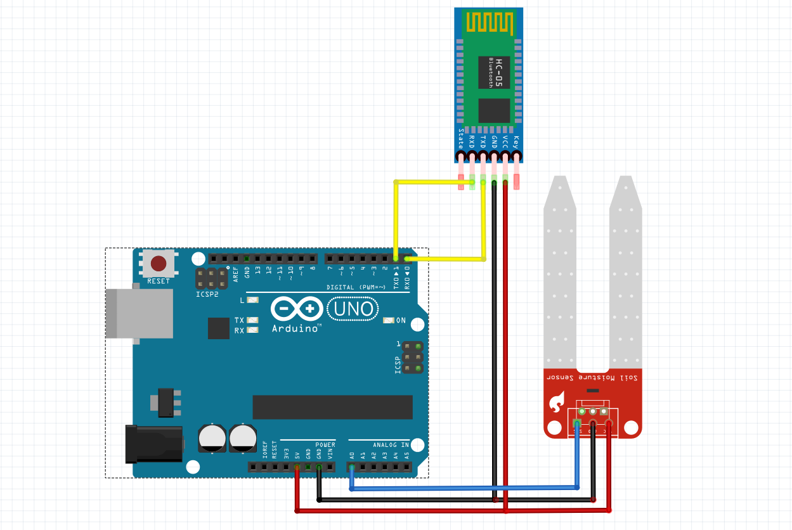

How it works
Pour compléter sa tâche d’assistant pour potager, le robot doit pouvoir prédire le besoin en eau de plusieurs types de plantes, organiser un « cycle légumineuse », et communiquer en retour les informations à l’utilisateur.
Pour cela, nous avons choisi d’utiliser Arduino, un microcontrôleur. En bref, c'est un circuit intégré (rassemble les éléments essentiels d'un ordinateur) qui nous permet de gérer des entrées et sorties digitale (qui envoyent/reçoivent un courant éléctrique intrépété soit comme un 0(LOW) ou un 1(HIGH).), ou analogique (un courant électrique interprété par des valeurs comprises entre 0 et 1023 dans le cas de l'arduino).
Ce microcontrôleur nous sert à interagir avec différents capteurs et actionneurs connecté aux entrées/sorties. Il est donc parfait pour notre projet. De plus, il a l’avantage d’être économique, populaire et entièrement programmable en C++ via la bibliothèque arduino.
En plus de l'arduino, il est nécessaire de choisir les différents composants dont nous allons avoir besoin pour le projet. Dans notre cas, et pour le premier prototype, notre choix s'est porté sur un capteur d’humidité du sol pour alerter l'utilisateur quand la plante à besoin d'eau ainsi que sur un module Bluetooth pour envoyer les données à l’utilisateur.
Voici le schéma du premier prototype :

Pour commencer, il faut demander à l’utilisateur de quelles plantes il souhaite faire la culture, et proposer automatiquement un cycle adapté. On commence le stockage des différentes plantes avec leurs caractéristiquent propres (mois de semi, de récolte, etc) via une strucutre de données. Ensuite, on demande à l'utilisateur de choisir sa plante, puis grâce à la fonction makeCycle, on défini quel est le meilleur cycle à effectuer.
#include <iostream>
#include <vector>
#include <array>
#include <stdlib.h>
using namespace std;
enum month_e {janvier, fevrier, mars, avril, mai, juin, juillet, aout, septembre, octobre, novembre, decembre};
array<string, 12> year = {"janvier", "fevrier", "mars", "avril", "mai", "juin", "juillet", "aout", "septembre", "octobre", "novembre", "decembre"};
#define PLANT_TOTAL_NB 2
struct plant_s {
string name;
vector<string> cycle;
unsigned short cropsNumber;
month_e startMonth;
month_e endMonth;
}plant[PLANT_TOTAL_NB];
void fInitPlant() {
plant[0].name = "chou"; plant[0].cycle = {"pois"}; plant[0].cropsNumber = 12; plant[0].startMonth = mai; plant[0].endMonth = decembre; cout << "1. " << plant[0].name << " (1)\n";
plant[1].name = "pois"; plant[1].cycle = {"chou"}; plant[1].cropsNumber = 37; plant[1].startMonth = fevrier; plant[1].endMonth = mai; cout << "2. " << plant[1].name << " (2)\n";
}
int fMakeCycle(int userPlantChoice) {
int whichPlant;
for(int i = 0; i < PLANT_TOTAL_NB; ++i) {
if(plant[userPlantChoice].nom == plant[i].cycle[0]) {
whichPlant = i;
break;
}
}
return whichPlant;
}
void IHM() {
int userPlantChoice;
cout << "choisissez une plante pour commencer la rotation parmi :\n";
fInitPlant();
cin >> userPlantChoice;
--userPlantChoice;
int whichPlant = fMakeCycle(userPlantChoice);
system("cls");
cout << year[plant[userPlantChoice].startMonth] << " " << plant[userPlantChoice].nom << endl;
cout << '|' << endl << '|' << endl << 'v' << endl;
cout << year[plant[userPlantChoice].endMonth];
if(plant[userPlantChoice].endMonth == plant[whichPlant].startMonth) {}
else cout << endl << year[plant[whichPlant].startMonth];
cout << " " << plant[whichPlant].nom << endl << '|' << endl << '|' << endl << 'v' << endl;
cout << year[plant[whichPlant].endMonth] << endl;
}
int main() {
IHM();
}
Il faut maintenant implémenter le calcul de l’ETP grâce à la formule de Thornwaite. On stocke les normales de saisons nécessaires aux calcul dans un tableau statique. On calcul l'ETP grâce à la fonction computeETP. On imagine ensuite recevoir les précipitations de la journée et les coeffécients culturaux via une API ou via un capteurs à ajouter sur l'arduino grâces aux deux fonctions get(). On calcul enfin l'ETR et on affiche le résultat à l'utilisateur.
#include <iostream>
#include <array>
#include <math.h>
using namespace std;
const string title = "Calcul du besoin en eau d'une plante";
//modifier le tableau avec les normales de saison de votre région avec n=n°mois = normaleSaison[n-1]
array<double, 12> normaleSaison = {4.95, 5.55, 8.75, 11.45, 15.25, 18.25, 20.5, 20.35, 16.95, 11.45, 8.3, 5.45};
//fonction qui calcule l'ETP à partir du mois pour lequel calculer l'ETP et des normales de saison
double computeEtp(array<double, 12> normale, int m) {
array<double, 12> iM;
//calcul de I(m)
for(int i=0; i<12; ++i) {
iM[i]=pow(normale[i]/5,1.514);
}
double I;
//calcul de I
for(auto j : iM) {
I += j;
}
double etpM = 16*pow((10*normale[m-1])/I,(0.016*I+0.5))*0.76; //calcul de ETP(m)
return etpM;
}
//API qui reçoit les précipitations par jour
double getPrecipitation() {
double precipitation = 0.2;
return precipitation;
}
//API qui reçoit les Kc des différents légumes
double getKc(string nomPlante) {
double KcCarotte = 1;
return KcCarotte;
}
int main()
{
cout << title << endl;
short m;
do {
cout << "Entrez le mois pour lequel calculer l'etp (1 a 12)\n";
cin >> m;
}while(m<1 || m>12);
double etp = computeEtp(normaleSaison, m);
double besoinEau = getKc("carotte")*(etp/30)-getPrecipitation();
//affichage du résultat
cout << "La plante a besoin de " << besoinEau << " mm d'eau par jour";
return 0;
}
On note que les exemples ci dessus sont écrit en C++, car il n'y a pas besoins d'accéder aux capteurs de l'arduino, et que l'écriture s'en trouve simplifié. Le code source final est lui écrit avec la bibliothèque arduino et ses spécificités. Pour ce dernier exemple, on utilise la bibliothèque, car nous avons besoin d'accéder au capteur bluetooth. En effet, il nous faut maintenant envoyer les données à l'utilisateur. On utilise pour cela Blynk, une bibliothèque qui nous permet d'envoyer les données vers un smartphone.
/**************************************************************
* Blynk is a platform with iOS and Android apps to control
* Arduino, Raspberry Pi and the likes over the Internet.
* You can easily build graphic interfaces for all your
* projects by simply dragging and dropping widgets.
*
* Downloads, docs, tutorials: http://www.blynk.cc
* Blynk community: http://community.blynk.cc
* Social networks: http://www.fb.com/blynkapp
* http://twitter.com/blynk_app
*
* Blynk library is licensed under MIT license
* This example code is in public domain.
*
**************************************************************
* Note: This only works on Android! iOS does not support SPP :(
* You may need to pair the module with your smartphone
* via Bluetooth settings. Default pairing password is 1234
*
* NOTE: Bluetooth support is in beta!
*
**************************************************************/
#define BLYNK_USE_DIRECT_CONNECT
#include <SoftwareSerial.h>
SoftwareSerial DebugSerial(2, 3); // RX, TX
#define BLYNK_PRINT DebugSerial
#include <BlynkSimpleSerialBLE.h>
char auth[] = "YourAuthToken";
int analog = 0; //définie le port analogique qui reçoit les données du capteur
void setup() //fonction qui ne se répète qu'une fois
{
DebugSerial.begin(9600);
// Démarre le port série qui sert au module bluetooth à communiquer avec le téléphone
Serial.begin(9600);
Blynk.begin(Serial, auth);
pinMode(analog, INPUT); //définie que le port analogique est une entrée
}
void loop() //boucle infinie
{
Blynk.virtualWrite(0, analogRead(analog)); //envoit les données à Blynk sur le port virtuel 0, correspondant au graphique
Blynk.run();
}
Next step
Pour aller plus loin, et dépasser le stade de prototype, nous avons exploré plusieurs pistes de recherche :
- Ajout de capteur concernant le rayonnement, la température du sol, de l’air et l’humidité de l’air pour pouvoir calculer l’ETP selon la méthode de Penman, bien plus précise.
- Ajout de panneau solaire et d'une batterie pour rendre fARm complètement autonome en énergie.
- Conception d’une imprimante 3D à la taille du potager pour planter, arroser, ajouter de l’engrais automatiquement.